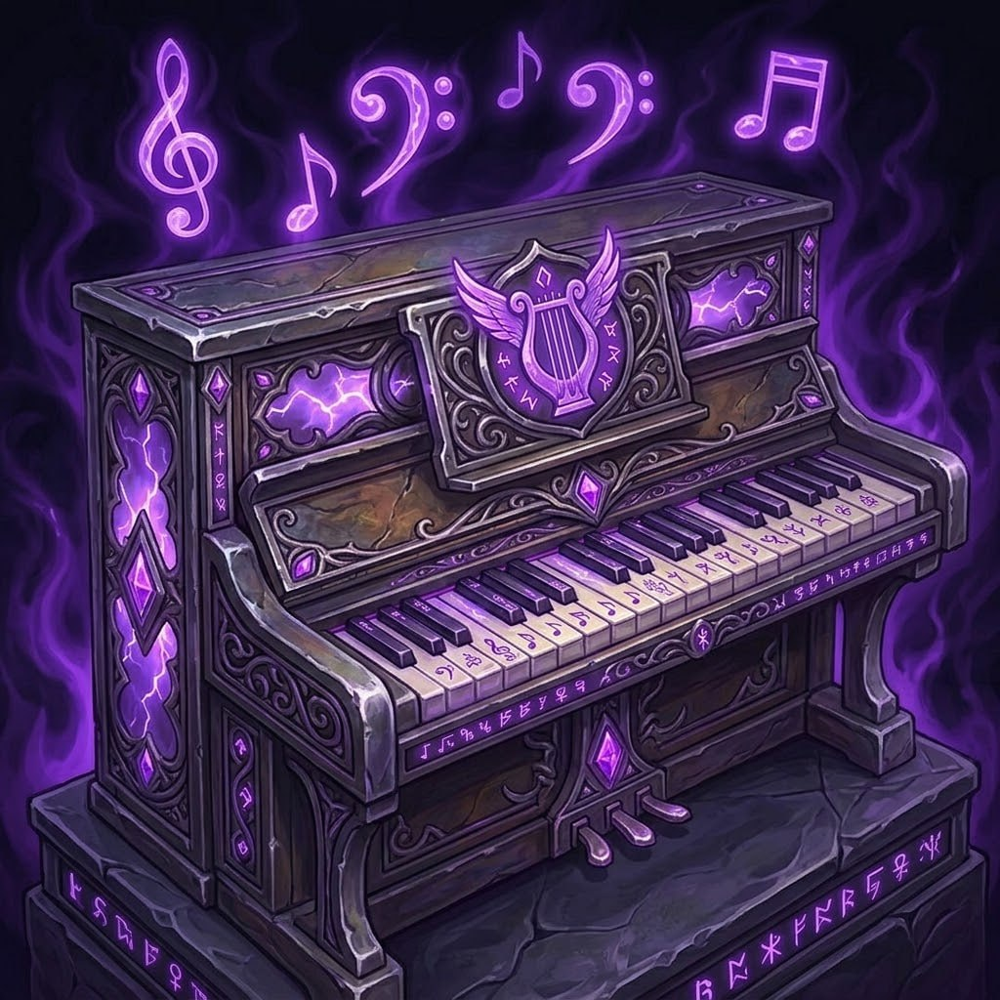
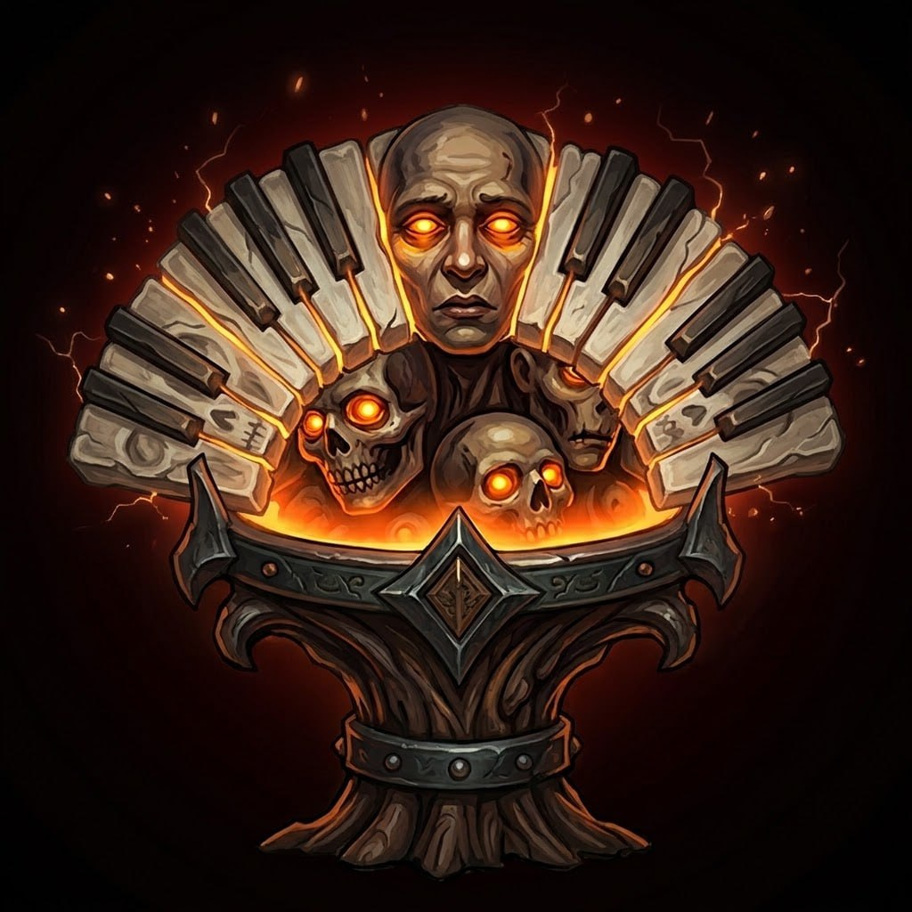
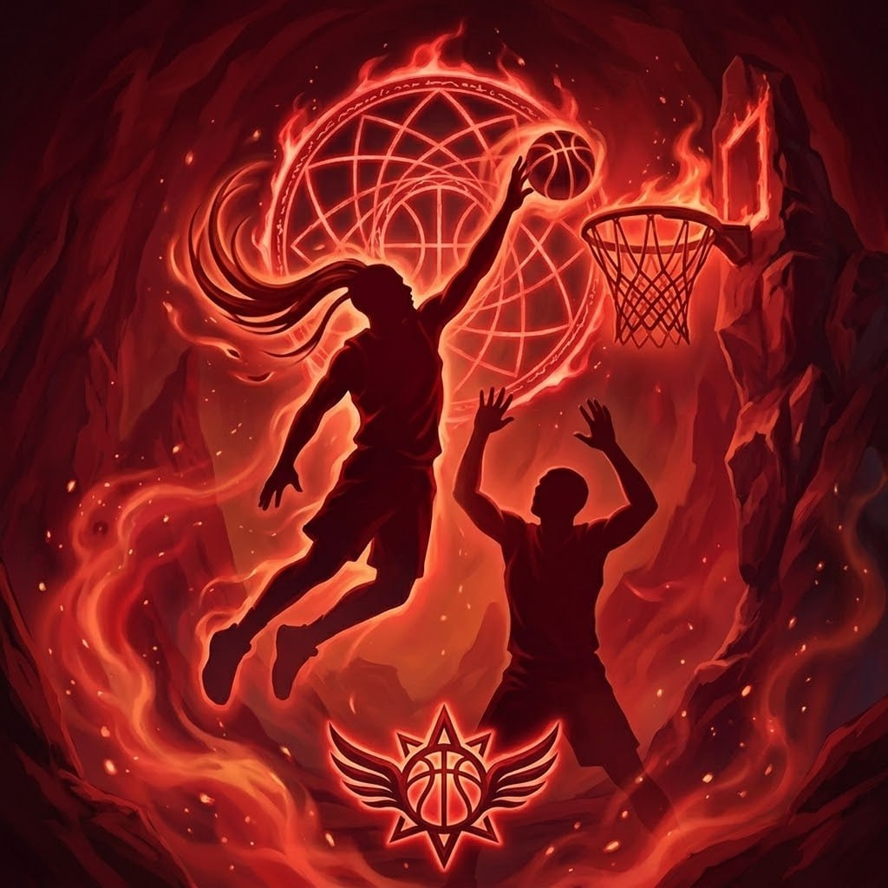
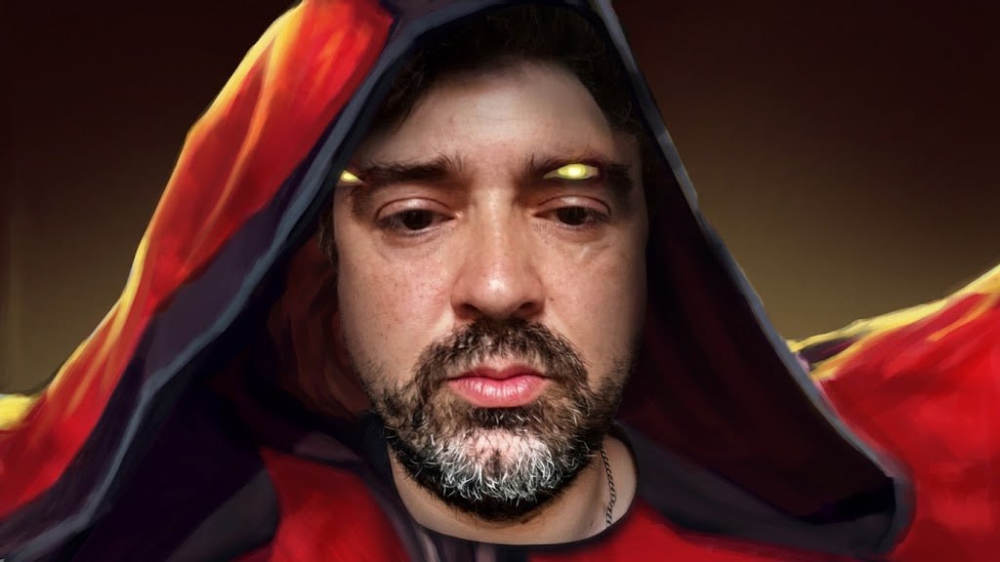

Index
00.
01.
02.
03.
04.
01.
02.
03.
04.

Narek Bagratuni is a musician and multimedia artist, born in Yerevan in 1997.
Trained as a professional pianist at the Rimsky-Korsakov Saint Petersburg State Conservatory, he later expanded his artistic practice through numerous interdisciplinary projects combining sound, light, and generative graphics.
He is currently a member of two collectives — Tundra and Null Forty Three — where he explores the expressive potential of digital media through immersive installations and audiovisual performances.
Since 2018, the 043 team has been organising a variety of events, starting with small jams and gradually growing to larger venues. The original concept of 043 includes the potential for a variety of artistic expressions, not always and not necessarily musical, but together forming a single emotional and aesthetic space.
Today, 043 is a community of artists, mostly based in Europe, always open to new collaborations and projects.
As a part of the project Narek operates in the musical and visual realms transmitting the vision of the collective.


TUNDRA is a new media artist collective that explores the synesthetic facets of interaction between sound, light, space, and new technologies.
As a technical director of the collective, Narek is responsible for the technical supervision of immersive installations (sound, light, video), spatial arrangement, and adaptation of setups to the collective’s aesthetic criteria.
His role also includes coordination of production and on-site deployment, serving as a liaison between the artistic team and technical constraints.


The original concept of 043 contains the potential for a variety of artistic expressions, not always and not necessarily musical, but together forming a single emotional and aesthetic space. In the spring of 2024, the 043 team came together to embark on a melancholic quest through colour, form, mathematics and the medium of light, inspired by the particularities of the space of the factory floor.
BACKSCATTER — the first audiovisual installation of the 043 project, was the result.
The installation creates a space for reflection on the very nature of interaction and reflects (Latin: reflectio) on the relationships within the collective. We focused on signaling, form-finding and backscattering.


Falling Rhythm Exhibition by 043 crew examines the fractures in natural and man-made systems. From ancient gods to artificial realities, the exhibition presents a world in flux and asks how we navigate, resist or embrace the broken cycles around us.
Through various media, the exhibition explores themes of transition, disruption and memory.
Concept & Display manager / noise performance at the opening / digital artwork “Falling Rhythm: purple”










